EAE1317 — Economia do Meio Ambiente e dos Recursos Naturais
2026-10-20
Um poço tem 20 barris de petróleo e deve servir a duas gerações. Sem limite de estoque, cada geração extrairia 15. A taxa de juros é de 10% por geração. Como uma alocação eficiente divide os 20 barris?
(a) 10 barris para cada geração.
(b) Mais de 10 barris para a geração presente.
(c) Mais de 10 barris para a geração futura.
E essa divisão é justa?
Referência: Phaneuf e Requate, caps. 15 e 18
Referência: Tietenberg e Lewis, caps. 5 e 6
1. Poluição. Externalidade em um único período: a emissão de hoje não altera o que existe amanhã.
2. Valoração. Como medir em reais o dano marginal do bem ambiental.
3. Recursos naturais. O tempo entra no problema: o que se extrai hoje deixa de existir amanhã.
4. Duas perguntas: qual alocação entre gerações é eficiente? Qual é justa?
Mar de Aral era 4º maior lago do mundo, mas praticamente secou ao longo de 20 anos.
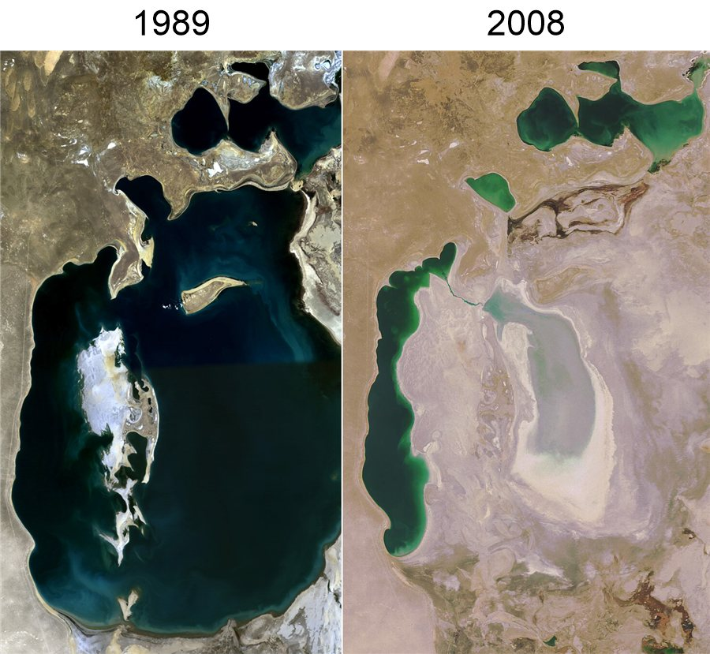
Imagens: NASA (domínio público).
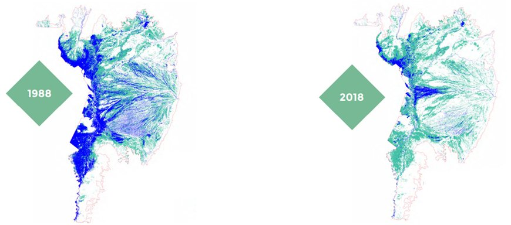
Projeto MapBiomas: Mapeamento Anual de Cobertura e Uso da Terra no Pantanal, Coleção 7. Licença CC BY 4.0. FactSheet-Pantanal_2022.pdf
\[{P}_{t}=a-b{q}_{t}\]
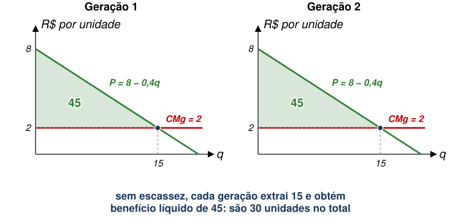
O que está faltando neste problema?
Se a reserva total (\(\overline{Q}\)) desse recurso é \(\overline{Q}\geq 30\), não há escassez.
Problema surge quando \(\overline{Q}<30\).
Com \(\overline{Q}=20\), se a geração presente extrair os 15 que deseja, restam apenas 5 para a geração futura.
\[\text{Benefício}_{t}=\int_{0}^{{q}_{t}}\left(a-bx\right)dx=a{q}_{t}-\frac{b}{2}{q}_{t}^{2}\]
Considerando que o custo é dado por \(C\left({q}_{t}\right)=c{q}_{t}\), qual é o valor presente líquido do benefício gerado em dois períodos?
\[a{q}_{1}-\frac{b}{2}{q}_{1}^{2}-c{q}_{1}+\frac{1}{1+r}\left[a{q}_{2}-\frac{b}{2}{q}_{2}^{2}-c{q}_{2}\right]\]
Qual seria a restrição neste contexto?
\[{q}_{1}+{q}_{2}\leq \overline{Q}\]
O problema de maximização seria, então,
\[\max_{{q}_{1},{q}_{2}} \left\{a{q}_{1}-\frac{b}{2}{q}_{1}^{2}-c{q}_{1}+\frac{1}{1+r}\left[a{q}_{2}-\frac{b}{2}{q}_{2}^{2}-c{q}_{2}\right]\right\}\]
\[\text{s.a. } {q}_{1}+{q}_{2}=\overline{Q}\]
Solução?
Substituindo \({q}_{2}=\overline{Q}-{q}_{1}\) e derivando em relação a \({q}_{1}\):
\[a-b{q}_{1}-c-\frac{1}{1+r}\left[a-b\left(\overline{Q}-{q}_{1}\right)-c\right]=0\]
Com \(a=8\), \(b=0{,}4\), \(c=2\), \(\overline{Q}=20\) e \(r=0{,}1\):
\[6-0{,}4{q}_{1}=\frac{6-0{,}4\left(20-{q}_{1}\right)}{1{,}1}\;\Rightarrow\;6{,}6-0{,}44{q}_{1}=-2+0{,}4{q}_{1}\]
\[{q}_{1}^{*}=\frac{8{,}6}{0{,}84}\approx 10{,}24 \qquad {q}_{2}^{*}=20-{q}_{1}^{*}\approx 9{,}76\]
Alternativamente, podemos resolver o problema com
\[\max_{{q}_{1},{q}_{2}} \left\{a{q}_{1}-\frac{b}{2}{q}_{1}^{2}-c{q}_{1}+\frac{1}{1+r}\left[a{q}_{2}-\frac{b}{2}{q}_{2}^{2}-c{q}_{2}\right]+\lambda \left[\overline{Q}-{q}_{1}-{q}_{2}\right]\right\}\]
E chegamos a
\[\underbrace{a-b{q}_{1}-c}_{\substack{\text{Benefício marginal do}\\ \text{recurso em } t=1}}=\underbrace{\frac{1}{1+r}\left[a-b{q}_{2}-c\right]}_{\substack{\text{Benefício marginal em } t=2\\ \text{trazido a valor presente}}}\]
É o custo de oportunidade de se extrair mais recurso hoje e deixar menos para amanhã.
Este custo é representado por \(\lambda\).
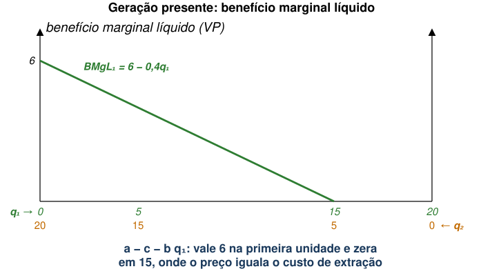
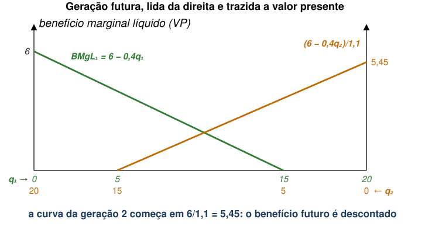
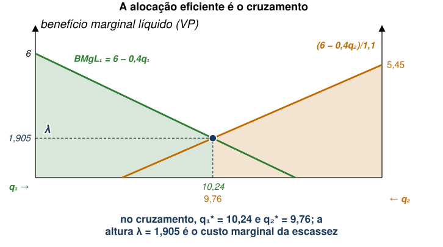
Custo marginal da escassez é crescente ao longo do tempo.
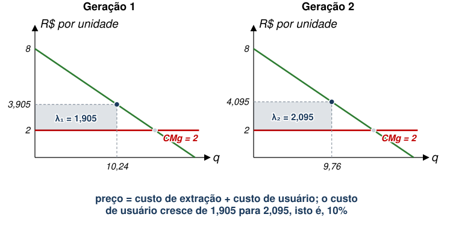
Em cada geração, o preço é o custo de extração mais o custo de usuário: \({P}_{1}=3{,}905\) e \({P}_{2}=4{,}095\).
\[\frac{{P}_{2}-c}{{P}_{1}-c}=\frac{2{,}095}{1{,}905}=1{,}1=1+r\]
Conforme vimos, a geração presente deixará recursos para o futuro de acordo com a taxa de desconto \(r\)
Se há escassez, \(r\) afeta negativamente recursos em \(t=2\)
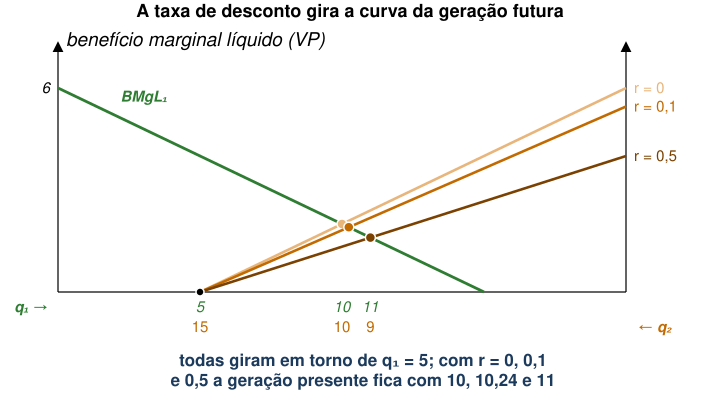
Conforme vimos, a geração presente deixará recursos para o futuro de acordo com a taxa de desconto \(r\)
Se há escassez, \(r\) afeta negativamente recursos em \(t=2\)
Portanto, com \(r>0\), geração atual tipicamente deixa menos para o futuro.
O fato de que gerações passadas deixam menos recursos para gerações futuras não parece exatamente justo.
Um critério possível que estudaremos é o de sustentabilidade.
Assim, geração presente tem liberdade para usar recursos que não estarão disponíveis no futuro.
Ou seja, sustentabilidade não exige que geração presente conserve recursos não-renováveis para uso futuro.
A pergunta que fica é se alocações dinamicamente eficientes são justas
Consideremos o exemplo numérico anterior, com \({q}_{1}^{*}\cong 10{,}2\) e \({q}_{2}^{*}\cong 9{,}8\)
Temos \(V\left({q}_{1}^{*}\right)=40{,}4\) e \(V\left({q}_{2}^{*}\right)=39{,}6\) → \(V({q}_{1}^{*})>V({q}_{2}^{*})\)
Alternativamente, alocação igualitária seria sustentável:
\[{q}_{1}={q}_{2}=\overline{q}=10\to V\left(\overline{q}\right)=40 \;\forall t\]
\(V(q)=aq-\frac{b}{2}q^{2}-cq\) é o benefício líquido da geração que extrai \(q\).
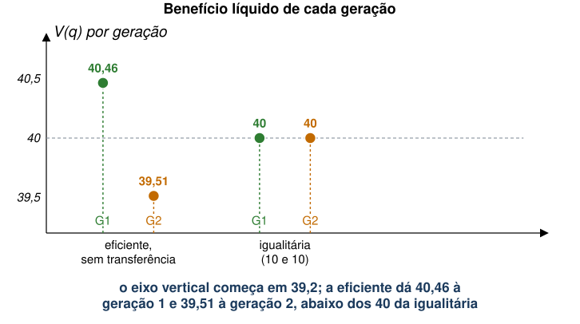
Mas, se geração presente pode transferir benefícios gerados para geração futura, sustentabilidade é possível.
Suponha que geração presente separe uma parte de seu benefício para a geração futura.
Teremos uma sobra de \(\theta =V\left({q}_{1}^{*}\right)-V\left(\overline{q}\right)=0{,}4\)
Aplicando esse valor à taxa \(r=0{,}1\), geração futura terá
\[V\left({q}_{2}^{*}\right)+\theta \left(1+r\right)=39{,}6+0{,}4\times 1{,}1=40{,}04>V\left({\tilde{q}}_{1}\right)\]
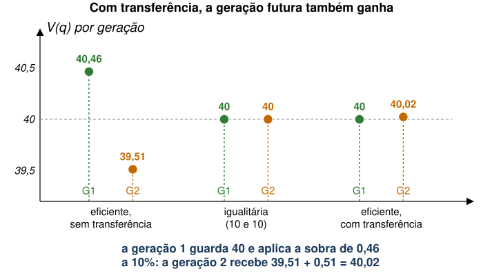
Portanto, eficiência dinâmica não satisfaz sustentabilidade automaticamente.
Entretanto, introduzindo alguma regra de compartilhamento de ganhos, é possível tornar essa alocação sustentável.
O consumo pode ser mantido constante para sempre se toda a renda de escassez do recurso extraído for investida em capital (Hartwick 1977).
Extração de petróleo no Alasca (EUA) gera muitas receitas, mas tem grande impacto ambiental.
Antes da conclusão do oleoduto do Alasca em 1976, governo do estado estabeleceu um fundo permanente.
Fundo é aplicado em diversos investimentos.
Esta é uma política que satisfaz o critério da sustentabilidade?
Esta é uma política que satisfaz o critério da sustentabilidade?
Apenas 25% da receita é devolvida às gerações futuras.
Portanto, o fundo resolve parcialmente o problema.
Pela regra de Hartwick, a sustentabilidade plena exigiria investir 100% da renda de escassez.
Em junho de 2026, o fundo valia US$ 91,9 bilhões e, em 2025, pagou dividendos de US$ 1.000 a cada residente.
| Critério | O que não pode cair | Substituição entre capitais |
|---|---|---|
| Sustentabilidade fraca | Valor do capital total (natural, físico e humano) | Ampla |
| Sustentabilidade forte | Valor do capital natural | Limitada |
| Sustentabilidade ambiental | Fluxo físico de cada recurso (ex.: captura até o crescimento do cardume) | Nenhuma |
Os conceitos de sustentabilidade e eficiência dinâmica não são a mesma coisa.
Uma possibilidade é buscarmos alocações sustentáveis e, dentre estas, encontrar aquela que é dinamicamente eficiente.
Podemos usar o conceito de eficiência como guia para maximizar bem-estar diante de múltiplas alternativas de alocação sustentável.
A seguir: mais de dois períodos, substitutos e custos de extração. Referência: Tietenberg e Lewis, cap. 6
1. Quanto existe? Reservas, dotação e reciclagem.
2. Muitos períodos. Quando o recurso se esgota e a que preço.
3. Substituto renovável. Quando ocorre a troca.
4. Custos crescentes e ambientais. O que fica no solo.
Antes de prosseguirmos, podemos separar as reservas de recursos não-renováveis em 3 categorias:
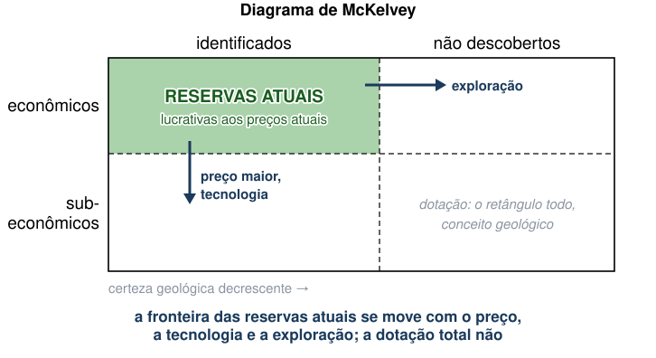
Conforme preço do recurso aumenta, pode valer a pena explorar novas formas de extraí-lo.
Exemplo:
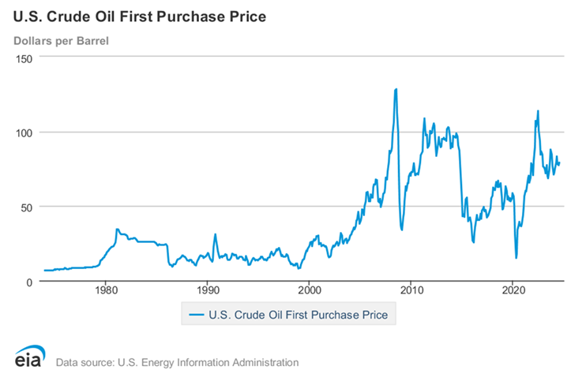
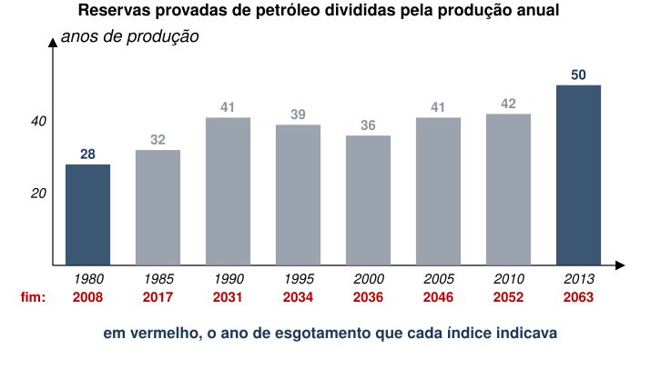
Em 1947, o presidente da Republic Steel estimou entre 5 e 7 anos a vida útil das minas de Mesabi (Minnesota), fonte de cerca de 60% do minério de ferro consumido pelos EUA na Segunda Guerra. Em 1955, a escassez já não preocupava (Kakela 1981).
| Antes | Com pelotização | |
|---|---|---|
| Teor de ferro do minério usado | 50% a 65% | menos de 30% (taconita) |
| Energia por tonelada | −17% | |
| Trabalho por tonelada | −8,2% | |
| Produção de um alto-forno (t/dia) | 1.500 | 2.700 a 2.800 |
Além de novas formas de extração, alguns recursos não-renováveis podem ser reciclados ou reutilizados.
Novamente, o uso dessa “tecnologia” estará sujeito à sua lucratividade.
Exemplo: vidro e alumínio são totalmente recicláveis.
Uma cidade gasta 20 por tonelada para coletar e separar material reciclável e vende a sucata por 10. Deve reciclar?
| Conta do caixa | Conta econômica | |
|---|---|---|
| Custo de reciclar | −20 | −20 |
| Venda da sucata | +10 | +10 |
| Aterro evitado | +20 | |
| Saldo por tonelada | −10 | +10 |
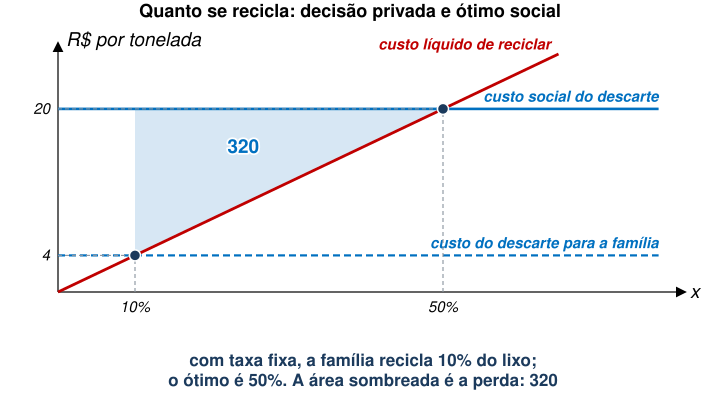
Em 1994, Marietta (Geórgia, EUA) reduziu a taxa fixa de coleta de US$ 15 para US$ 8 por mês e testou duas cobranças adicionais (Van Houtven e Morris 1999):
| Programa | Como se paga | Um saco a mais custa | Lixo não reciclado |
|---|---|---|---|
| Saco | US$ 0,75 por saco | US$ 0,75 | até −51% |
| Lata | US$ 3 a 4 por lata, contratado antes | nada, até o limite contratado | cerca de −20% |
Voltemos ao modelo intertemporal, mas consideremos agora múltiplos períodos.
\[\max_{\{{q}_{1},...,{q}_{T}\}} \sum_{t=1}^{T} \frac{1}{{\left(1+r\right)}^{t-1}}\left[a{q}_{t}-\frac{b}{2}{q}_{t}^{2}-c{q}_{t}\right]+\lambda \left[\overline{Q}-\sum_{t=1}^{T} {q}_{t}\right]\]
As CPOs para um período \(t\) qualquer são
\[\frac{a-b{q}_{t}-c}{{\left(1+r\right)}^{t-1}}=\lambda , \qquad t\in \left\{1,2,...,T\right\}\]
\[\overline{Q}=\sum_{t=1}^{T} {q}_{t}\]
Vamos supor os mesmos parâmetros de antes
Relembremos que o Custo Marginal da Escassez aumenta com o tempo.
Com múltiplos períodos, em quanto tempo recurso é exaurido?
É possível resolver recursivamente o problema de alocação eficiente (chutando o valor de \(\lambda\) inicial).
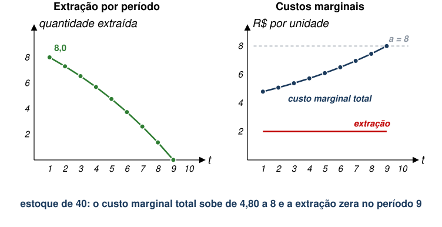
Não há mais exploração do recurso a partir do período 9. Por quê?
Como é de se esperar, se não há alternativa ao recurso.
A chegada à extração zero é suave: o preço sinaliza a escassez antes, e o recurso não acaba “de repente” (Tietenberg e Lewis 2018).
Recursos renováveis têm alta taxa de reposição e podem, supostamente, ser repostos perpetuamente.
Em muitos casos, essa taxa de reposição pode ser influenciada por humanos.
Recursos renováveis podem servir como substitutos para recursos não-renováveis.
Como o problema muda se existe um recurso renovável alternativo?
Vamos supor que esse recurso renovável seja um substituto perfeito do recurso não-renovável.
\[\begin{aligned}\max_{\substack{\{{q}_{1},...,{q}_{T}\}\\ \{{q}_{s1},...,{q}_{sT}\}}}\; &\sum_{t=1}^{T} \frac{1}{{\left(1+r\right)}^{t-1}}\left[a\left({q}_{t}+{q}_{st}\right)-\frac{b}{2}{\left({q}_{t}+{q}_{st}\right)}^{2}-c{q}_{t}-d{q}_{st}\right]\\ &+\lambda \left[\overline{Q}-\sum_{t=1}^{T} {q}_{t}\right]\end{aligned}\]
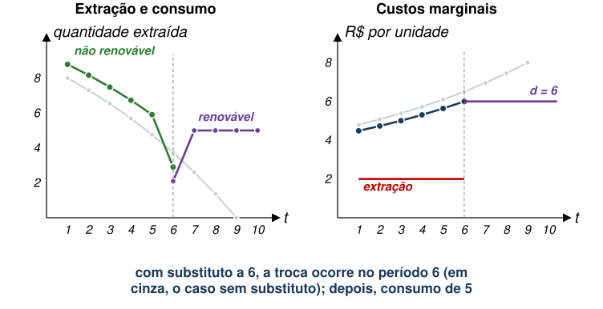
Além da existência de recursos alternativos, o custo de extração de um recurso não-renovável tende a ser crescente.
Neste caso, podemos ter uma função de custo marginal dada por
\[CM{g}_{t}=c+\alpha {Q}_{t}\]
Qualitativamente, se há recurso renovável alternativo, a conclusão é a mesma.
Extrai-se o recurso não-renovável enquanto seu custo marginal total é menor do que custo marginal do recurso renovável.
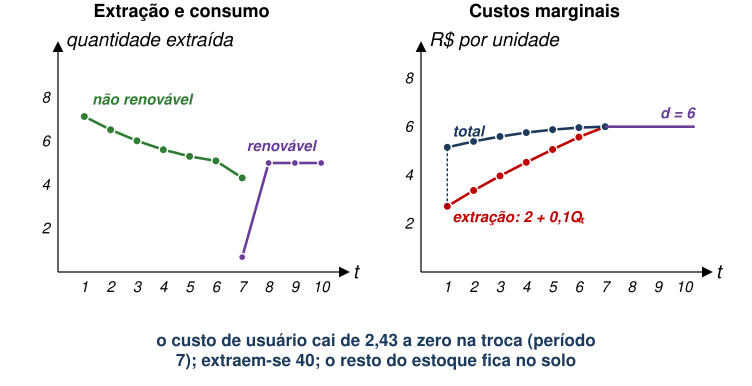
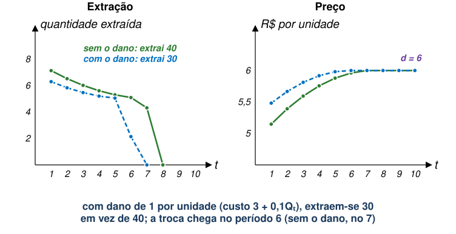
Considere este exemplo, com custo constante. Por que a taxa de crescimento do imposto importa?
Mesmo modelo de N períodos: \(\overline{Q}=40\), \(c=2\), sem substituto. Cada unidade extraída emite uma unidade de CO\(_2\).
\[\frac{a-b{q}_{t}-c-{\tau}_{t}}{{\left(1+r\right)}^{t-1}}=\lambda\]
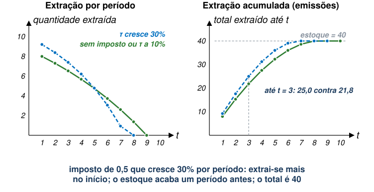
| Imposto \(\tau_t\) | \(q_1\) | Último período | Extraído até \(t=3\) | VP do dano |
|---|---|---|---|---|
| Sem imposto | 8,00 | 8 | 21,84 | 32,06 |
| Constante, 0,5 | 7,58 | 9 | 20,84 | 31,60 |
| Cresce 10% (\(=r\)) | 8,00 | 8 | 21,84 | 32,06 |
| Cresce 30% | 9,22 | 7 | 25,00 | 33,32 |
Exercício
Qual é a alocação eficiente neste caso?
\(a=8\), \(b=0{,}4\), \(c=2\), \(r=0{,}1\). O estoque inicial é 21. O que fica no solo depois do período 1 cresce \(s=0{,}1\).
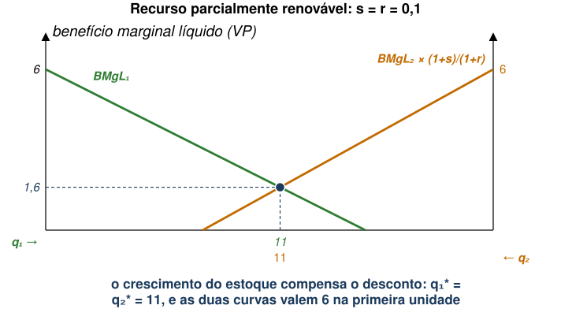
| Alocação | \({q}_{1}\) | \({q}_{2}\) | \({V}_{1}\) | \({V}_{2}\) |
|---|---|---|---|---|
| Sem escassez (\(\overline{Q}\geq 30\)) | 15 | 15 | 45 | 45 |
| Míope (\(\overline{Q}=20\), 15 hoje) | 15 | 5 | 45 | 25 |
| Eficiente (\(\overline{Q}=20\), \(r=0{,}1\)) | 10,24 | 9,76 | 40,46 | 39,51 |
| Igualitária (\(\overline{Q}=20\)) | 10 | 10 | 40 | 40 |
| Parcialmente renovável (21, \(s=r\)) | 11 | 11 | 41,8 | 41,8 |
Vinte barris para duas gerações, juros de 10%. Como a alocação eficiente divide o estoque?
A resposta é (b): 10,24 para a geração presente. O barril de amanhã vale menos hoje.
(a) só valeria com \(r=0\), ou se o estoque crescesse à taxa de juros, como no exercício.
(c) exigiria \(s>r\), ou uma demanda futura maior.
E é justa? Não automaticamente: a geração presente precisa aplicar a sobra de 0,46 em favor da futura.
Clima e Energia.
O renovável é um teto para o preço do fóssil. A transição eficiente é suave. Por que, então, a transição energética precisa de política pública?
EAE1317 — Economia do Meio Ambiente e dos Recursos Naturais